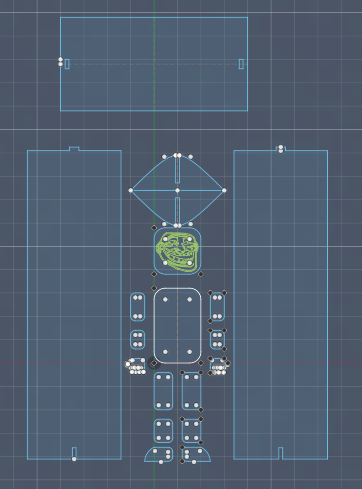
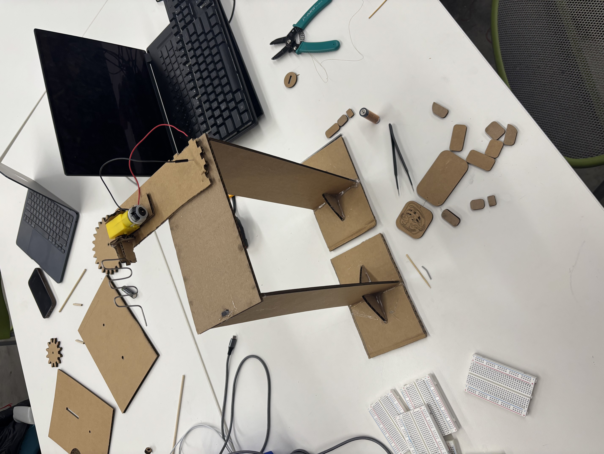
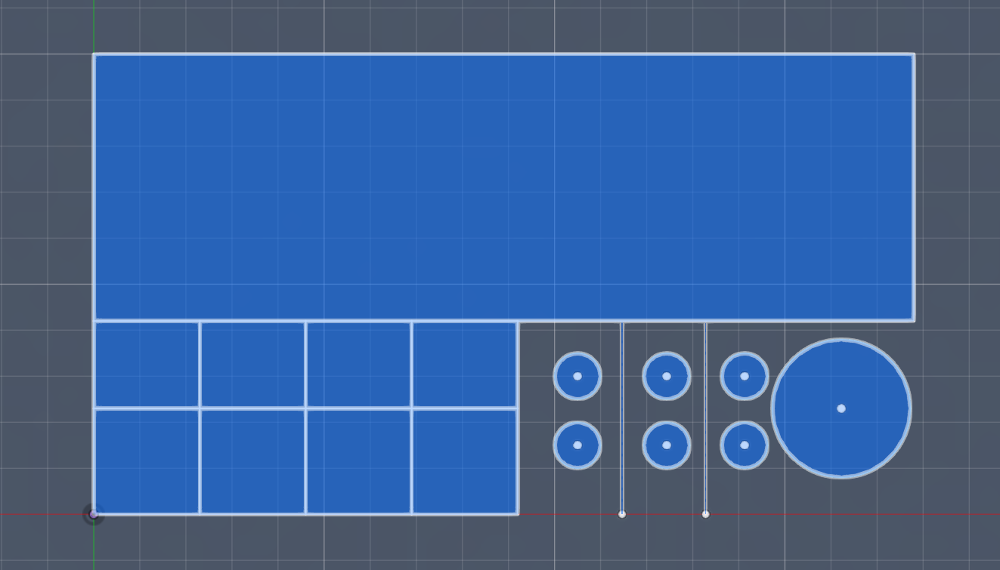
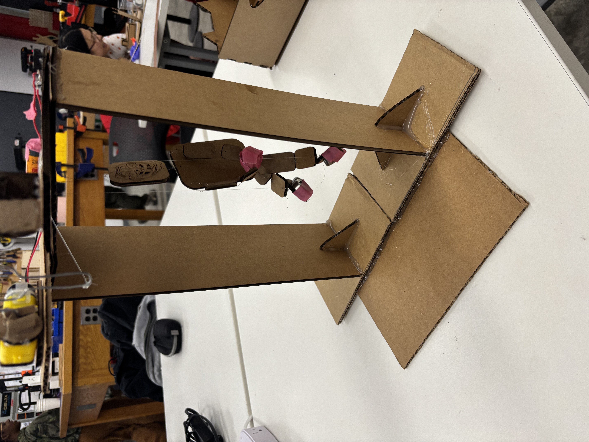
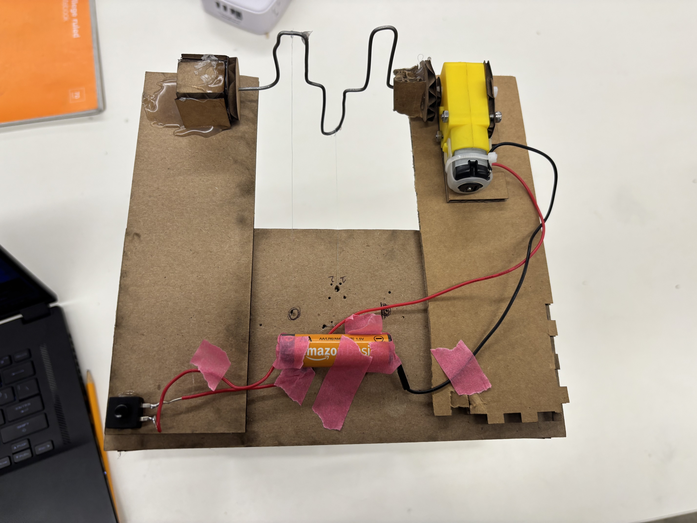

<div class="textcontainer">
<p class="margin"> </p>
<h3>Week 3: Hand Tools and Fabrication</h3>
<h4>Kinetic Sculpture</h4>
Oh man. For my kinetic sculpture, I decided to try and animate a puppet. The first iteration had a basic stand.
The idea was that a rotating wire with alternating branches would pull and relax a string. Here is my initial CAD for it.


The plan was to hang the puppet from a stand with the diamond shaped bases and pull the strings of each limb in an alternating manner.
Working with the string was extremely difficult. I used thin copper wire to connect the body parts and used a clear fishing string for the movement.
I attached the head to the top of the stand and put fishing wire on each limb. The motor was attached to the top and rotating with the intention of pulling the string and letting it go back to its intital state.
The string got terribly tangled, so I decided to only have the legs move. The wire was also not shaped to lead to an alternating pattern of movement.
I had to reshape it. You will see this difference between the intial and final designs of the rotating wire.
The greatest challenge was preventing the string from getting tangled. I had to remove the strings from the hands (not very important)
But then I had to lube up the wire and loosen the knots of the strings on the raised points.
I also had to add material to allow the motor to be both above and behind the main stage of the puppet. The CAD for the bonus material is here.
Upon installing the motor, it was very unbalanced, but I added another base at the bottom to keep it stable.



Here is the video of motion.
<video width="320" height="240" controls>
<source src="kinetic.mp4" type="video/mp4">
Puppet Dance
</video>
</div>